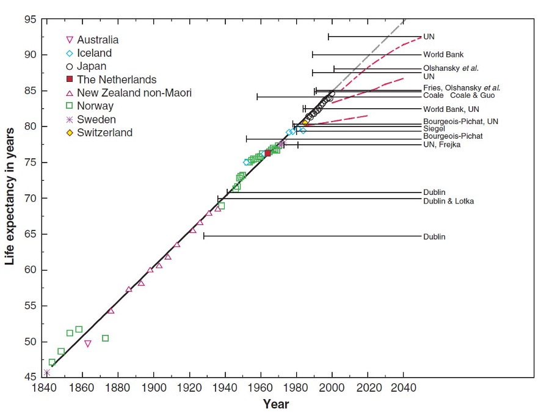
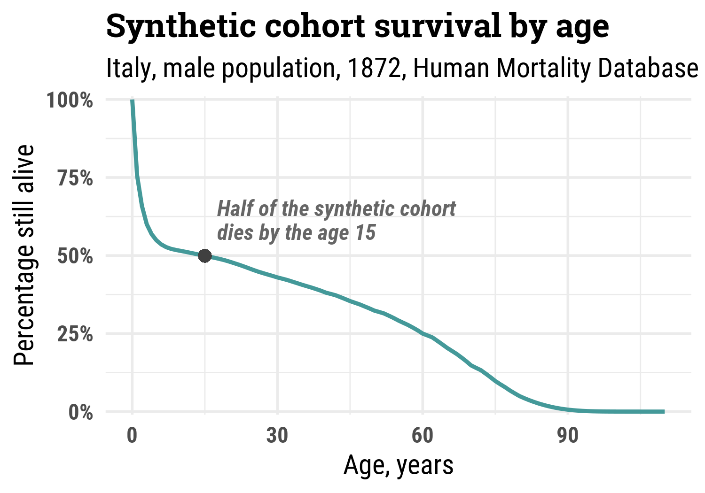
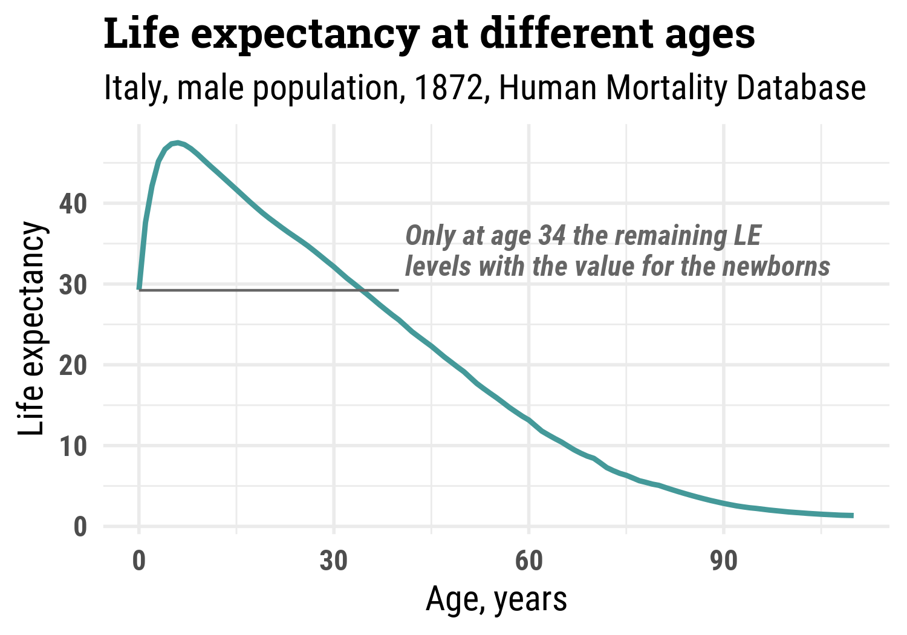

What is life expectancy? And, even more important, what it isn’t
Ilya Kashnitsky ![]()
It really is a remarkable achievement and maybe a lot of luck that the world mundanely operates with such a complex indicator as life expectancy. Unlike many statistics and quantities of general use that are being monitored and reported regularly, life expectancy is not observed directly. It’s an output of a mathematical model called life table. And as any model it comes with a certain load of assumptions and limitations, which are easily forgotten and omitted in the everyday interpretations and misinterpretations of the indicator.
So, why do we need any mathematical modelling in the first place? Consider a seemingly simple task: you want to know how long people live. What can be easier? Let’s just see how many years lived those who died recently. Why not? Such a metric would be massively driven by population age structure. For the most of the recent history human populations were rapidly growing, which means that each next generation was bigger than the previous one. Relative differences in the size of generations affect the age composition of those dying.
Okay. Then why don’t we simply take a group of people born in the same year and see how long on average they live? We could (demographers call such groups cohorts). But it takes remarkably long to wait until the last person in the cohort dies. And we want to know what’s happening now.
How can we learn what’s happening now? Well, for that we need a mathematical model. We cannot observe the unfulfilled lifespans directly but we can construct/imagine an artificial population to help us understand the current mortality. The idea is simple: let’s take those dying now and divide them by the size of their age groups. This yields age-specific death rates – the key input for the life table needed to calculate life expectancy. Now, let’s take an imaginary cohort and see how long would they live on average if they experience these observed age-specific death rates. The imaginary population is know as a synthetic cohort. And here comes the main assumption of the life table: The model assumes that the observed age-specific death rates stay unchanged throughout the hypothetical lives of the hypothetical people in the synthetic cohort.
This big assumption of unchanging age profile of death rates almost never holds in real life. Mortality in human populations keeps improving beyond the most optimistic expectations. For decades the best demographers were systematically underestimating the progress in mortality reduction (Oeppen and Vaupel, 2002)

The horizontal lines are the limits of human population-level life expectancy as anticipated by renowned scholars; points are the actual data in the world leading countries. Source: (Oeppen and Vaupel, 2002)
Life expectancy is a snapshot of the current mortality and is not a projection/forecast of the actual experience of the newborn cohorts. The current nature of period life expectancy is nicely illustrated by Dr. Robert Chung: “I have a car that can display”driving range” given its estimate of fuel level and how I’m driving. When climbing a steep hill, the range can decrease a lot; when descending, the range can increase. That’s what period e(x) is like.”
But if life expectancy talk about now and not the future, why is it called “expectancy” in the first place? This rather unfortunate and confusing naming comes from statistics, where “expected value” is a standard term for the mean of a distribution. The connotation crossing is rather unfortunate and as it strongly nudges the common future oriented misinterpretation of life expectancy.
The most popular error in public perception of period life expectancy forgets about the heavy assumption of the synthetic cohort (constant age-specific death rates throughout their hypothetic lives anchored in current year) and talks about the future of kids being born now. In normal years this large interpretation error is somewhat masked by the gradual and often close to linear improvements in mortality. A rule of thumb is to simply add ~6 years to period life expectancy to obtain a reasonable cohort estimate (Goldstein and Wachter, 2006). Mortality shocks like 2020 are a different story though. Here the “forward looking” (mis)interpretation of period life expectancy projects the shock levels of mortality into the future. Of course this doesn’t happen. Shocks are called shocks because they are temporal.
Another important detail that often misses public attention is that life expectancy is not a single value – it can be estimated for every age. Most often and by default life expectancy is reported “at birth”. But we can estimate remaining life expectancy for various ages. And here comes another popular misunderstanding of life expectancy. Too often we come across the references to human age and longevity in the past that sound something like: “She was 40, a very elderly lady by the standards of that time as people lived on average about 30 years back the”. True, there were times when life expectancy at birth was about 30 years even in the most developed now countries. This doesn’t mean though that those who outlived this threshold age were getting old at young (by our current standards) ages. Let me illustrate.
Let’s take Italian male population in 1872, the first available year in Human Mortality Database. Have a look at the survival of this synthetic cohort – the proportion of the initial cohort that is still alive by certain age. Half of the synthetic cohort died by age 15!

And here is how remaining period life expectancy looked by age. Infant and child mortality was sooo high that those escaping early deaths had higher remaining life expectancy.

At age 34 remaining life expectancy was the same as at birth. Only, it applied to the 41% survivors. And I guess the perception of age was not radically different among those survivors. It was all about selection and luck getting there. The high early life mortality is responsible for another popular demographic myth, which postulates that everybody used to have many kids in the past. No, people used to have many births, and only a fraction of those kids survived to adult life.
References
- Goldstein JR, Wachter KW. 2006. Relationships between Period and Cohort Life Expectancy: Gaps and Lags. Population Studies 60: 257–269 DOI: 10.1080/00324720600895876
- Oeppen J, Vaupel JW. 2002. Broken limits to life expectancy. Science 296: 1029–1031 DOI: 10.1126/science.1069675